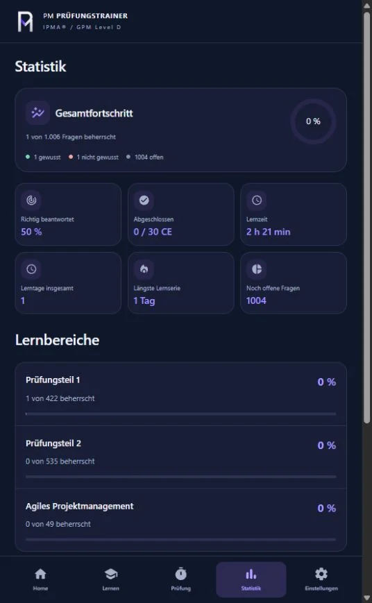
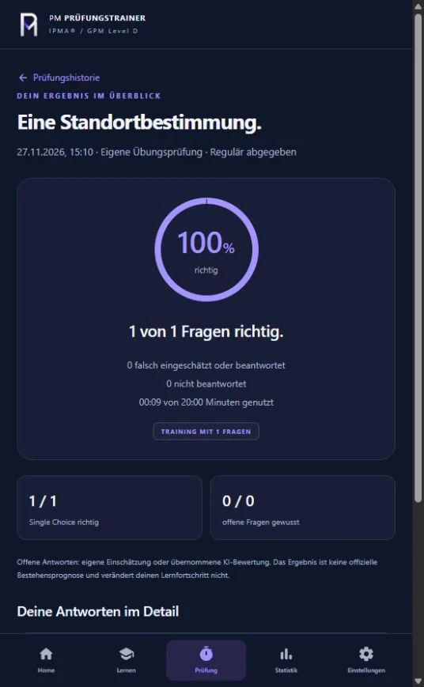

Gezielt lernen
1.006 eigenständig entwickelte Übungsfragen mit Musterlösungen. Suche, Filter, Lesezeichen und Markierungen zum Wiederholen.
WEB-APP · IPHONE · TABLET · COMPUTER
Auf dem iPhone, Tablet und Computer lernen. Im Browser öffnen oder auf dem iPhone über ein eigenes Symbol wie eine App starten.
19,99 € einmalig · inklusive gesetzlicher Umsatzsteuer · KI-Guthaben separat

DAS KANN DEIN PRÜFUNGSTRAINER
1.006 eigenständig entwickelte Übungsfragen mit Musterlösungen. Suche, Filter, Lesezeichen und Markierungen zum Wiederholen.
Einzelne Prüfungsteile, eine eigene Übungsprüfung oder die 180-Minuten-Gesamtprüfung. Auswertung nach Abgabe und gespeicherte Prüfungshistorie.
Gesamtfortschritt, Lernzeit, Lerntage, Lernserie und Lernbereiche. Den Lernstand sichern und auf ein anderes Gerät übertragen.
EINBLICKE IN DIE WEB-APP


AUF DEM IPHONE
Du kannst die Web-App zum Home-Bildschirm hinzufügen. Dann öffnest du sie über das PM-Logo, ohne jedes Mal die Browseradresse einzugeben. Es ist keine iPhone-App aus dem App Store.
Dein Browser und die hinzugefügte Web-App können getrennte Lernstände speichern. Einen bestehenden Lernstand vor dem Wechsel sichern und danach wiederherstellen.
OPTIONAL MIT KI
Antwort eingeben, „Mit KI prüfen“ wählen und Feedback erhalten. In der Prüfung erfolgt die Auswertung erst nach der Abgabe.
Mit deinem eigenen OpenRouter-Konto. Internet ist erforderlich; mögliche KI-Kosten laufen über dein eigenes Guthaben. Selbstbewertung bleibt immer möglich.
PASSEND ZU DEINEM GERÄT
GUT ZU WISSEN
Nein. Wähle die Variante für dein Gerät. Android-App und Web-App sind getrennte Produkte; du brauchst nicht beide zu kaufen.
Nein. Musterlösungen und Selbstbewertung sind ohne KI vollständig nutzbar. OpenRouter ist freiwillig. KI benötigt Internet und kann zusätzliche Kosten verursachen.
Android: Lernen, Prüfungssimulation und Selbstbewertung. Web-App: zunächst online anmelden, vollständig laden und die bestätigte Offline-Vorbereitung abwarten. Anmeldung, KI und Updates benötigen Internet. Sichere deinen lokalen Lernstand regelmäßig.
Nein. Der Lernstand bleibt lokal. Mit Sicherung und Wiederherstellung kannst du ihn übertragen. Browser und Home-Bildschirm-Web-App können auf dem iPhone getrennte Speicher haben: vor dem Wechsel exportieren, danach importieren.
SCHRITT FÜR SCHRITT
OpenRouter verbinden, Antworten prüfen und Prüfungen nach der Abgabe auswerten. Ohne KI bleiben beide Apps vollständig nutzbar.

Neue Funktionen verständlich erklärt · 3:11 Minuten
Video auf YouTube ansehen ↗Die Videos öffnen auf YouTube. Erst beim Aufruf wechselst du zum externen Anbieter.